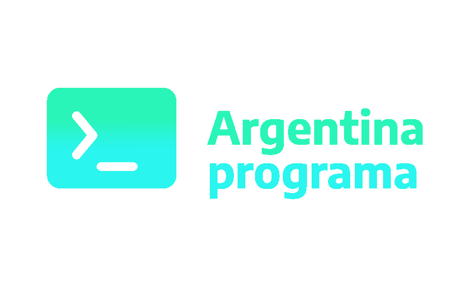

<nav class="navbar navbar-expand-md navbar-dark bg-dark  py-0">
  <div class="container-md">
    <a class="navbar-brand py-0" href="#">
      
    </a>

    <button
      class="navbar-toggler"
      type="button"
      data-bs-toggle="collapse"
      data-bs-target="#navbarNavAltMarkup"
      aria-controls="navbarNavAltMarkup"
      aria-expanded="false"
      aria-label="Toggle navigation"
    >
      <span class="navbar-toggler-icon"></span>
    </button>

    <div class="collapse navbar-collapse" id="navbarNavAltMarkup">
      <div class="navbar-nav ms-auto d-flex align-items-end">
        <a class="nav-link  mt-2 my-md-0" href="https://getbootstrap.esdocu.com/docs/5.1/migration/">
          
        </a>
        <a class="nav-link px-md-4 mb-md-0" href="#">
          
        </a>
        <a class="nav-link me-md-2 mb-md-0" href="#">
          
        </a>
        <button class="btn btn-outline-success mb-1 mt-3 mt-md-0 ms-md-3" routerLink="/login">
          Login
        </button>
      </div>
    </div>
  </div>
</nav>
